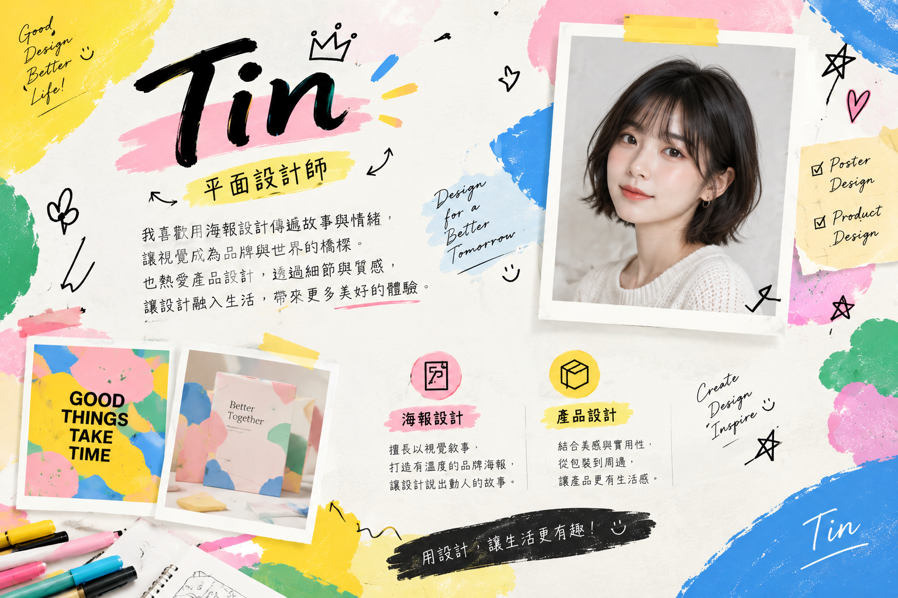
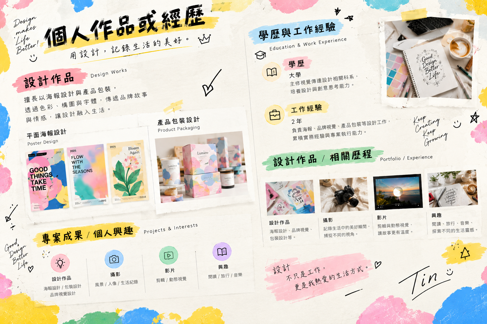
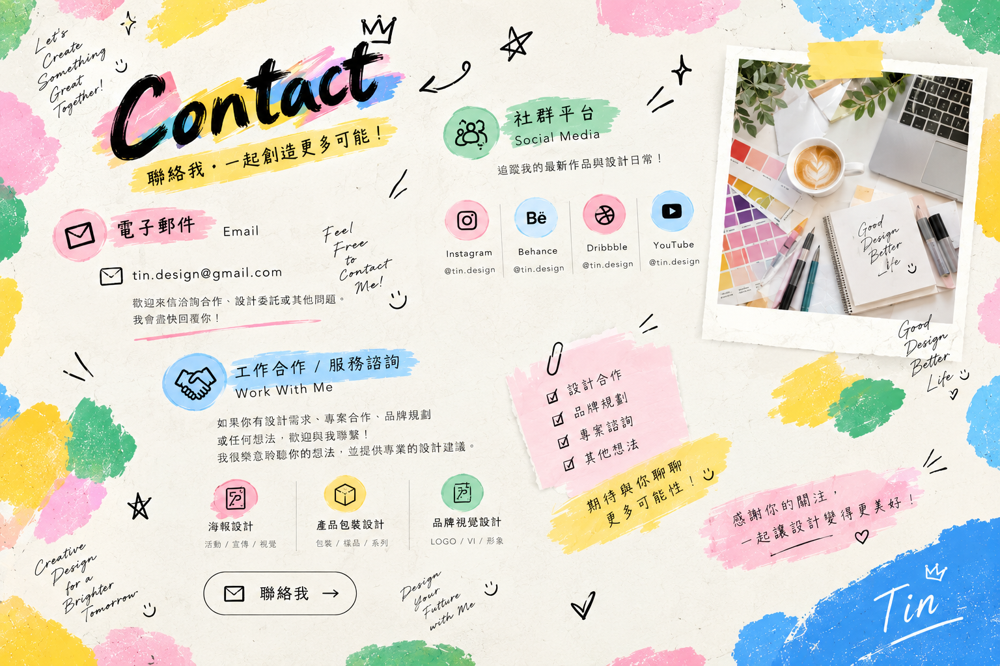
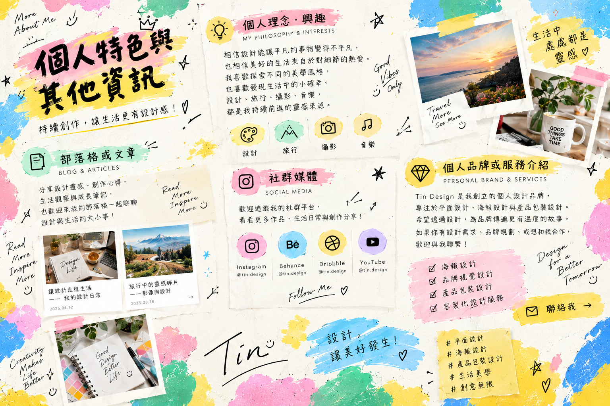

城市色彩 — 主題海報
以街道裡的日常色彩為靈感，透過幾何構圖呈現城市的節奏。
設計類型：平面海報
你好，我是
平面設計師 用設計把想法變成日常風景
專注於海報、產品與包裝設計，喜歡從細節中找到品牌與人之間的連結。


嗨，我是 Tin，一位喜歡觀察生活、把靈感轉化為視覺語言的平面設計師。
我相信好的設計不只好看，也能清楚傳達理念，讓人與品牌產生共鳴。創作時，我重視內容、色彩與版面的平衡，並享受從研究到打樣、逐步完成作品的過程。
平時喜歡逛展、攝影、收集包裝與閱讀設計刊物。我的創作風格簡潔而有溫度，善用清楚的構圖、細膩的色彩和恰到好處的留白。
從概念發想到視覺呈現，記錄每一次設計探索。
以街道裡的日常色彩為靈感，透過幾何構圖呈現城市的節奏。
設計類型：平面海報

為日常食品打造簡潔易讀的包裝，讓產品特色在貨架上清楚呈現。
設計類型：產品包裝設計

以光影和柔和色彩建立活動氛圍，延伸至現場舞台視覺。
設計類型：品牌視覺設計
從品牌個性出發，規劃一致且具有辨識度的形象應用。
設計類型：品牌視覺與產品設計
讓設計回應真實需求，以清楚、耐看且有溫度的視覺，為每個想法找到合適的表達方式。
喜歡攝影、逛展與旅行，從街角招牌、植物色彩和生活物件裡，發現新的創作起點。
珍惜每次嘗試與合作，持續整理設計過程，讓靈感透過作品與更多人交流。
把靈感與工作中的小發現，整理成可以帶走的筆記。
靈感觀察
從閱讀節奏到視覺焦點，聊聊如何讓留白成為設計的一部分。
包裝設計
拆解第一眼的辨識度、資訊層級與拿在手上的使用感受。
創作日常
把街景、招牌和季節色彩帶回工作桌，建立自己的靈感資料庫。
從一張海報到完整品牌視覺，依照你的需求討論合適的合作方式。
活動主視覺、宣傳海報、印刷品與社群圖像。
產品概念視覺、包裝版面、標籤與印刷完稿。
品牌識別延伸、視覺風格整理與線上線下應用。
有設計合作、專案詢問或想交流的想法嗎？歡迎來信與我聊聊。
Instagram：追蹤 Tin 的 Instagram
Behance：瀏覽 Tin 的 Behance 作品
洽詢工作合作